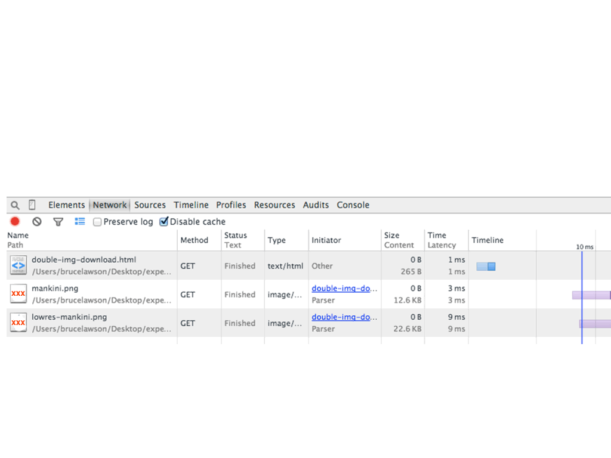
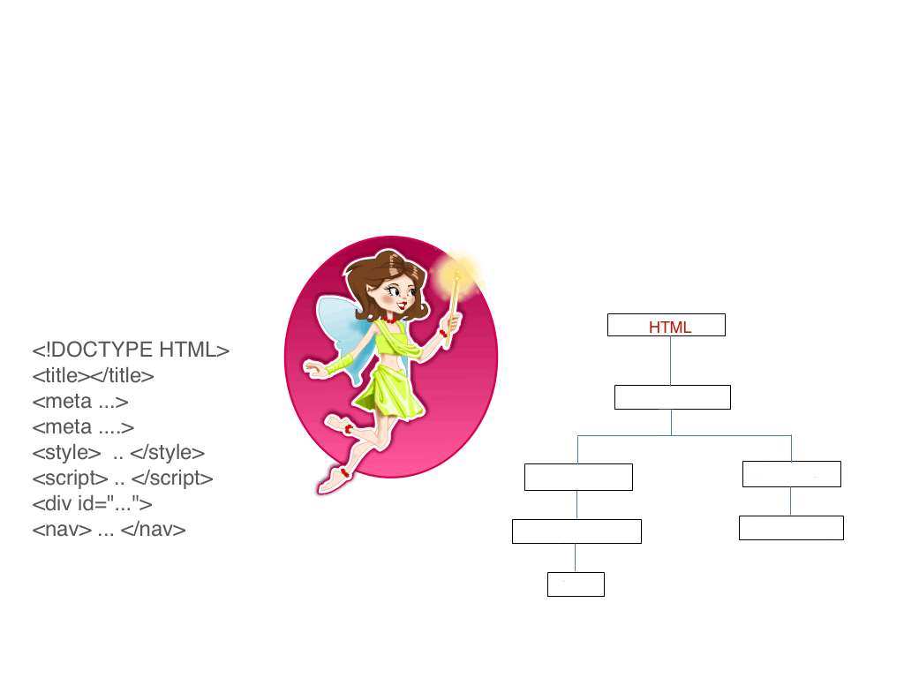
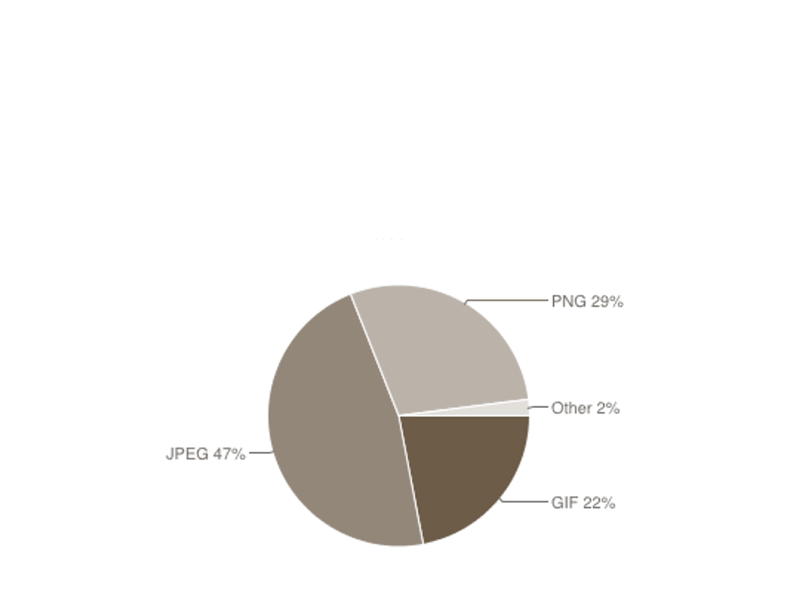

New HTML thingies
<picture>srcset attribute- x descriptor
- w descriptor
sizes attribute
<dfn>Responsive</dfn>
quick to react in the way that is needed, suitable, or right for a particular situation
Macmillan Dictionary
<dfn>Responsive</dfn>
quick to react in the way that is needed, suitable, or right for a particular situation
Macmillan Dictionary
…and getting bigger.

The ‘retina’ question
Q: How can I send super high-quality (=huge) images to retina devices but normal quality images (=smaller file size) to devices with non-retina/ small screens?
The ‘retina’ answer
A: I can't.
<img src="blah.jpg">
CSS to the rescue?
<img id=lovely src=mankini.png
alt="Bruce in a mankini">
@media all and (max-width:320px) {
#lovely {content: url(lowres-mankini.png);}
}
Double download - WTF?

The Browser Fairy Queen

Preloader
One study showed preloading makes pages load ~20% faster.
I think preloading is the single biggest performance improvement browsers have ever made.
Steve Souders
HTML5 video with MQs
<video>
<source src=foo-lowres.webm media="max-width:480px">
<source src=foo-hires.webm>
<!-- Fallback content -->
</video>
Notes on Adaptive Images (yet again!) (Dec 2011)
My <picture> strawman
<picture>
<source src=foo-lores.jpg media="max-width:480px">
<source src=foo-full.jpg>
<!-- Fallback content -->
<img src="foo-lores.jpg" alt="…">
</picture>
Optimising for high-dpi screens
srcset x descriptor
<img src="normal.jpg"
srcset="hi-res.jpg 2x"
alt="…">
srcset x descriptor
<img src="normal.jpg"
srcset="hi-res.jpg 2x, super-res.jpg 3x"
alt="…">
Stretchy ("responsive") images
Previously…
<img src="mankini.png" alt="lovely">
…
img {max-width:100%;
height:auto;}
Makes the browser work
On the test page with 6x images (not unusual at the moment on many responsive sites), the combination of resizes and decodes added an additional 278ms in Chrome and 95.17ms in IE (perhaps more …) to the time it took to display those 10 images.
Why We Need Responsive Images: Part Deux
- Tim Kadlec
The w descriptor
<img src="medium.png"
alt="mankini"
srcset="big.png 960w,
small.png 240w">
Spec change!
<img src="medium.png"
alt="mankini"
srcset="big.png 960w,
small.png 240w"
sizes="100vw">
Changing image sizes
<img
src="opera-400.jpg" alt="The Oslo Opera House"
sizes="(min-width: 640px) 60vw, 100vw"
srcset="opera-200.jpg 200w,
opera-800.jpg 800w,
opera-1200.jpg 1200w,
opera-2000.jpg 2000w">
Sending different image formats
Current formats (Jan '15)

WebP
WebP lossless images are 26% smaller in size compared to PNGs. WebP lossy images are 25-34% smaller in size compared to JPEG images
More, conversion tools
HTML5 video
<video>
<source src=foo.webm type=video/webm>
<source src=foo.mp4 type=video/mp4>
<!-- Fallback content -->
</video>
Real <picture> format switch
<picture>
<source srcset="tree.webp" type="image/webp">
<img src="tree.jpg" alt="tree">
</picture>
webp= 25K, jpg=38K
<picture> magic
<picture> just magically changes which image the <img> pulls in to display.
Check currentSrc in JavaScript to see what’s chosen by the browser.
<picture> for art direction
<picture>
<source
media="(min-width: 1024px)"
srcset="whitehouse-fullshot.jpg">
<img src="whitehouse-closeup.jpg"
alt="Dog in front of white house">
</picture>
Summary
Responsive image is for
- resolution switching
- width switching
- alternate formats
- art direction
When?
- Opera
- Chrome
- Firefox 38 (12 May 2015)
- IE:
srcset "in development", <picture> "under consideration"
- Safari:
srcset x descriptors (iOS 8.1), <picture> ??
Progressive enhancement
Because responsive images require use of <img src>, no-one gets a worse experience than they do now.